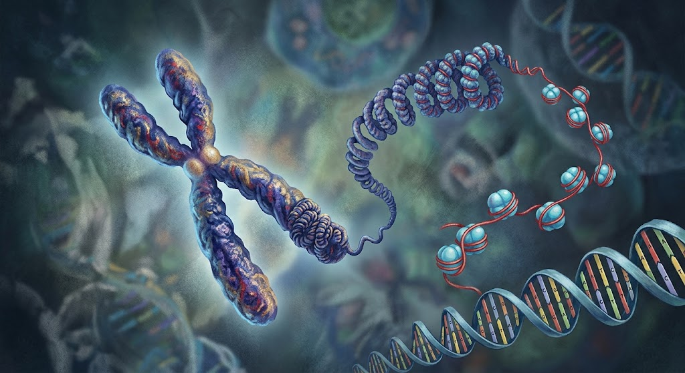

ความหมายและโครงสร้างของโครโมโซม
โครโมโซม (Chromosome) คือ โครงสร้างที่อยู่ภายในนิวเคลียสของเซลล์ ประกอบด้วย DNA และโปรตีนฮิสโตน ทำหน้าที่เก็บรักษาและถ่ายทอดข้อมูลทางพันธุกรรมของสิ่งมีชีวิต โครโมโซมจะเห็นได้ชัดในช่วงที่เซลล์กำลังแบ่งตัว เพราะ DNA จะขดตัวแน่นเป็นแท่ง
มนุษย์มีโครโมโซมในเซลล์ร่างกายทั่วไป 46 แท่ง หรือ 23 คู่ แบ่งเป็นโครโมโซมร่างกาย 22 คู่ และโครโมโซมเพศ 1 คู่ โครโมโซมแต่ละแท่งประกอบด้วย DNA ที่พันรอบโปรตีนฮิสโตนอย่างเป็นระเบียบ ทำให้สามารถบรรจุ DNA ที่มีความยาวมากไว้ภายในนิวเคลียสได้
ส่วนสำคัญของโครโมโซม ได้แก่ โครมาทิด เซนโทรเมียร์ และเทโลเมียร์ โดยเซนโทรเมียร์ช่วยยึดโครมาทิดและเกี่ยวข้องกับการแยกโครโมโซมระหว่างการแบ่งเซลล์ ส่วนเทโลเมียร์ช่วยป้องกันปลายโครโมโซมไม่ให้เสียหาย โครโมโซมจึงมีความสำคัญต่อการเจริญเติบโต การทำงานของเซลล์ และการถ่ายทอดลักษณะทางพันธุกรรมจากพ่อแม่ไปสู่ลูก